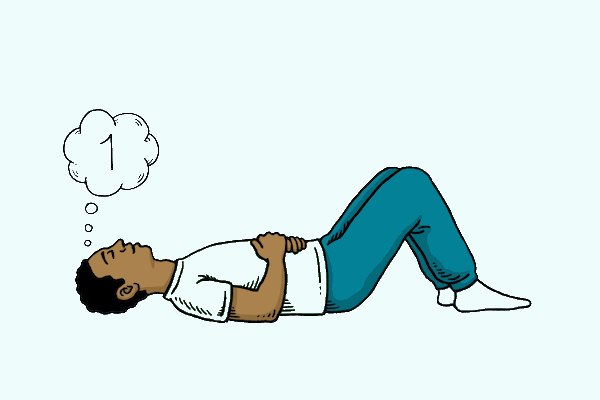
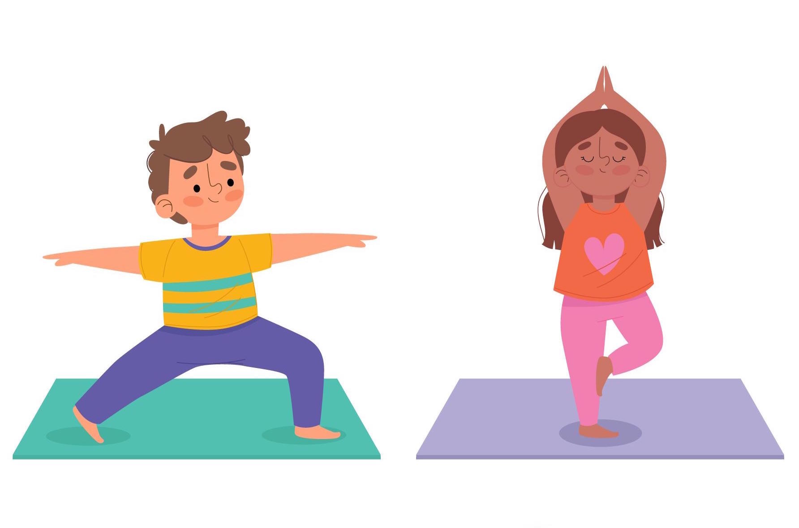
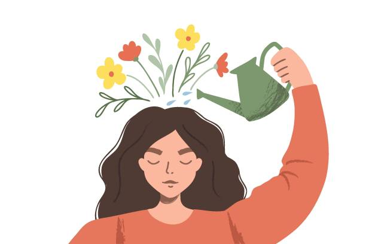

Realiza estas actividades para sentirte más tranquilo y relajado.

Respiración Profunda
Respira profundamente para calmarte.

Relajación Muscular
Relaja cada parte de tu cuerpo.

Visualización Positiva
Imagina un lugar tranquilo y relajante.